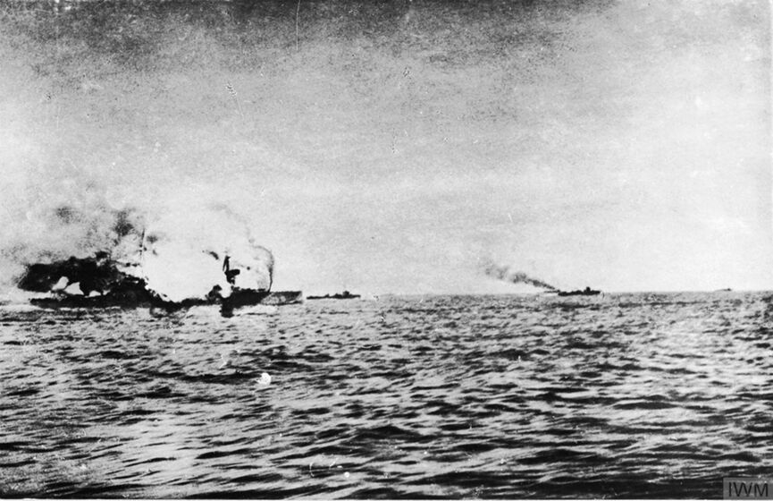
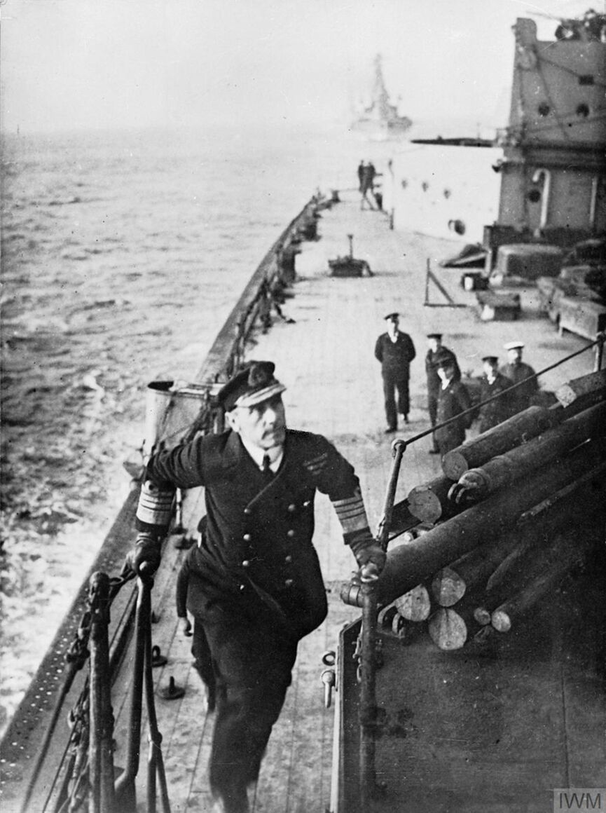
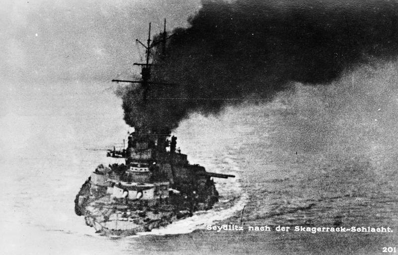
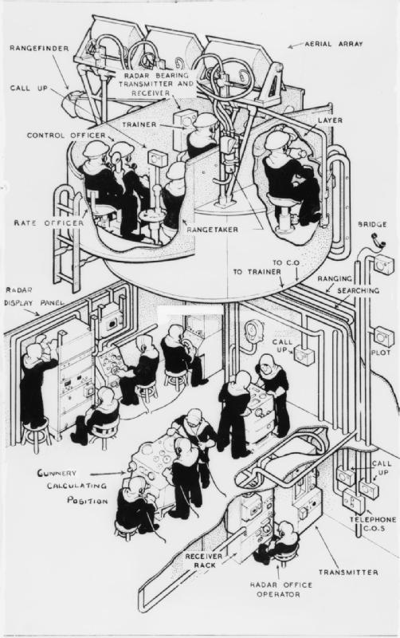
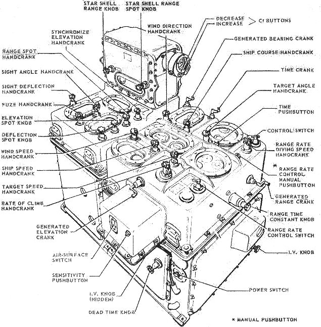
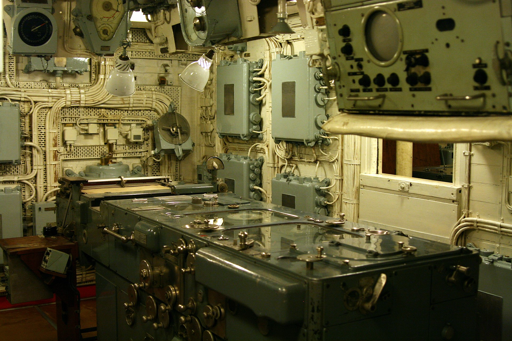
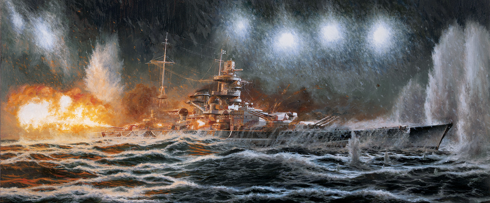
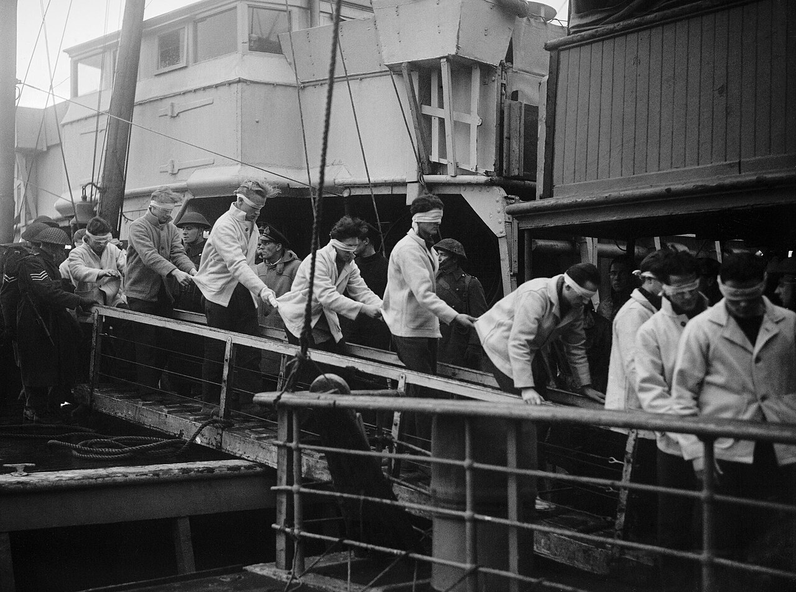
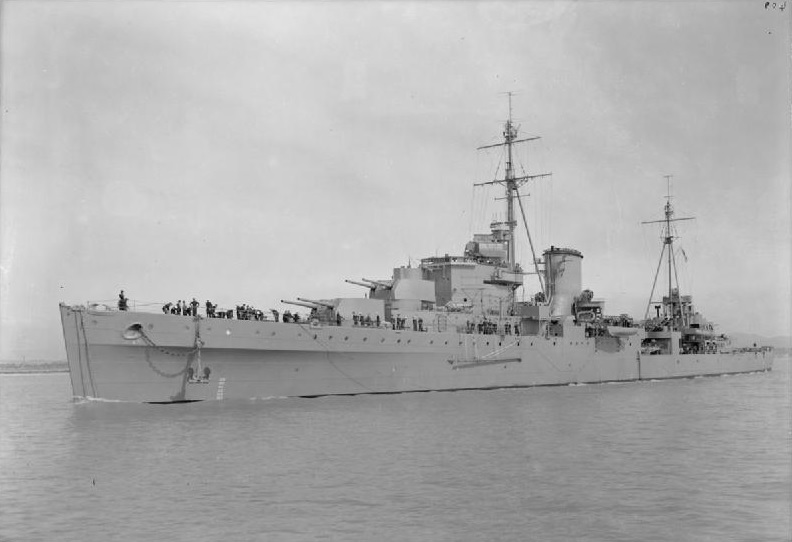
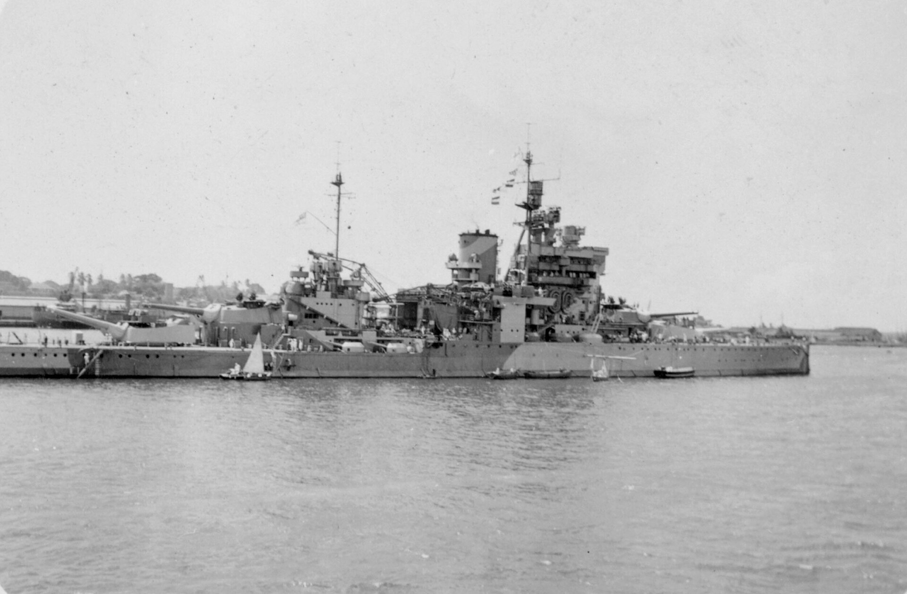

WW2 중 항모에서의 야간 작전 (5) - 유틀란트에서 마타판까지
게시: 2025-03-20T06:30:13+09:00
<WW1 당시 야간 해전을 포기한 이유> WW1 이전에는 함교에서 전성관(voice tube 혹은 speaking tube)을 통해 어느 방향에 있는 어느 적함을 때리라고 각각의 포탑에 명령을 전달하면, 각각의 포탑이 알아서 적과의 거리와 방위각 등을 판단하고 포격하는 방식. 이건 수 km 앞의 적함을 공격할 때나 유효했던 전술이었고, 하물며 야간에는 절대 통하지 않는 방식. 일단 10km가 넘는 원거리에 위치한 적함과의 거리를 파악하는 것 자체가 쉽지 않았고, 조명탄이든 달빛이든 탐조등이든 어떻게든 적함을 확인했다고 하더라도, 발포하는 순간 적함을 다시 놓치는 경우가 많았음. 주포에서 뿜어져 나오는 밝은 섬광 때문에 관측자가 순간 눈이 멀 수 밖에 없었는데, 그때 다시 적함을 찾아내는 것이 쉽지 않았기 때문. WW1 당시엔 이미 대형 탐조등이 탑재되어 있었으니, 그걸 이용하여 적함을 찾는 것이 쉬울 것 같지만, 그건 적함이 수백m 거리 안에 있을 때 이야기고, 제 아무리 커다란 탐조등이라고 해도 그걸 수km 밖으로 비추면 빛으로 밝혀지는 면적은 작은 동전보다 크지 않았기 때문. 게다가 당시 탐조등도 포탑처럼 전성관에 의해 어느 방향 어느 위치를 비추라는 명령을 받아 손으로 이리저리 탐조등을 비췄기 때문에, 거포들의 포격 소리로 시끄러운 상황에서는 함교에서 원하는 대로 목표물을 재빨리 찾아내지 못했음. 1916년 영국 Grand Fleet와 독일 High Seas Fleet가 맞붙은 유틀란트 해전 당시, 양측의 교전 거리는 대략 10km가 넘었음. 그런데 영국 그랜드 함대의 선두함과 후미함의 거리만 해도 대략 10km. 비록 무전기가 도입되기는 했지만, 이런 대함대는 주간에도 통제하기가 어려운데 야간에는 서로 충돌하지 않도록 하는 것만도 어려운 일이었고, 자칫하다간 아군끼리 서로 쏘는 일이 생기기 쉬웠음. 특히나 밤이 되면 적의 어뢰정이나 구축함이 어둠을 틈타 접근한 뒤 어뢰를 쏘아댈 것이 뻔했는데, 그런 일을 막고자 아군 전함 수km 앞에 세워둔 아군 구축함과 적 구축함, 어뢰정을 어둠 속에서 구분하는 것은 결코 쉽지 않았음.

(유틀란트 해전에서 폭발을 일으키며 침몰하는 영국해군 순양전함 HMS Invincible (2만톤, 25노트). 전함들끼리의 싸움은 장갑이 뚫리면 순식간에 끝나는 경우가 종종 있는데, 바로 이 경우. 독일 순양전함들인 Lützow와 Derfflinger로부터 집중 포격을 당한지 딱 90초만에 인빈서블은 대폭발을 일으키며 침몰. 아마도 마지막 포격 중 한 발이 함 중간에 있는 Q 포탑 아래의 탄약고를 뚫고 들어가 폭발한 듯 하다고. 1,026명이 사망했고 딱 6명이 살아남았는데, 5명은 앞 마스트 꼭대기에 있던 사격통제실에 있었고, 1명은 의아하게도 폭발 바로 윗부분인 Q 포탑의 거리탐지기(rangefinder)에 있던 수병. 폭발 순간 자리에서 튕겨져 바다에 떨어진 것 같다고.) 그래서 유틀란트 해전에서 해가 지고 독일 대양함대가 어둠 속에서 모항으로 퇴각하자, 당시 영국 그랜드 함대 사령관인 Jellicoe 제독은 아래와 같은 기록을 남기며 1794년 하우(Howe) 제독처럼 야간 해전을 회피. 덕분에 독일 대양함대는 피해를 최소화한 채 무사히 귀항하여 나름 승리했다고 주장. "나는 대형함정 간의 야간 전투는 즉각 거부했다. 이유는 (1) 적에게 다수의 어뢰정이 존재한다는 것 (2) 어둠 속에서 피아 구분이 어렵다는 점 때문이었다. 무엇보다, 현대적인 조건하에서도 야간 해전의 결과는 순전히 운에 달려 있다."

(Grand Fleet 사령관인 Sir John Jellicoe)

(유틀란트 해전 직후 귀항하는 독일 순양전함 SMS Seydlitz (2만8천톤, 26노트). 자이들리츠는 영국 전함의 주포만 21방을 맞았고 부포로는 수없이 두들겨 맞았으며 거기에 어뢰도 1방 맞았음. 저렇게 반쯤 잠수함처럼 물 속 깊숙이 몸을 담그고 간신히 귀항한 자이들리츠에는 바닷물이 약 5천3백톤 넘게 들어온 상태였다고.) <사격통제 컴퓨터와 별 포탄> 그러나 WW1 초반부터 WW2 사이에는 해군 기술에 있어 여러가지 큰 발전이 있었음. 가장 큰 기술적 진보는 항공모함이겠으나, WW2 개전 초기만 해도 해군의 주력이라고 생각되었던 전함에게도 여러가지 발전이 있었고 그 중에는 야간 해전을 가능하게 해주는 것들이 있었음. 바로 사격통제장치 (fire control director)와 star shell. 이젠 전함의 주포탑들이 각각 알아서 적함을 파악하는 것이 아니라, 높은 함교 위에 위치한 사격 통제실에서 공격 대상의 위치와 속도, 방향각 등을 파악하고 계산한 뒤, 여러 포탑들에게 어느 각도, 어떤 앙각으로 포격할 지를 전달. 이제 각 포탑에서는 적의 위치를 찾느라 고민할 필요 없이 지시 받은 수치에 맞춰 장전하고 발포하기만 하면 되었음. 이런 중앙 사격통제장치의 도입이 야간 해전과는 무슨 상관이 있나? 있었음. 높은 함교 위에 위치한 사격통제소에서는 아군의 포화에 의해 눈이 머는 일이 없었던 것. 뿐만 아니라 WW1 이후 개발된 star shell, 즉 전함의 주포나 부포를 이용하여 조명탄을 멀리 적 함대 상공에서 터뜨려주는 포탄이 개발되면서 조명의 문제가 크게 개선됨.

(이건 레이더와 통합된 fire control system. 갑판 아래에 있는 것들은 포술 계산을 위한 아날로그 컴퓨터들.)

(아날로그 컴퓨터인 Ford Mark 1A Fire Control Computer)

(경순양함인 HMS Belfast의 Admiralty Fire Control Table, 즉 사격통제용 아날로그 컴퓨터)

(이건 1943년 12월 26일 바렌츠해에서 벌어진 전투에서 격침된 독일해군 전함 Scharnhorst를 묘사한 그림. 낮부터 시작된 전투는 저녁 7시 45분경 샤른호스트가 격침되면서 끝났는데, 북극해에 가까운 바렌츠가 전투 해역이다보니 당시엔 이미 낮부터 해가 진 상태라서 낮부터 영국해군은 계속 star shell 조명탄을 쏘아대며 샤른호스트의 위치를 확인.

(1944년 1월 2일, 스코틀랜드 북쪽 섬이자 영국 해군 군항인 Scapa Flow에 내려지는 샤른호스트의 생존자들. 군항의 상황을 보지 못하게 눈가리개를 씌워놓은 것이 인상적. 격침된 샤른호스트에서는 고작 36명만 구조되어 포로가 되었고 1,932명의 독일 수병들이 물고기밥이 됨.) 그러나 아이러니컬하게도 WW2 몇 년 전부터 영국해군이 야간 해전 훈련을 시작한 진짜 이유는 따로 있었음. 그건 바로 영국해군의 약화. 그와 함께 독일과 이탈리아 등 잠재 적국들의 해군력이 비약적으로 발전하여, 로열네이비는 더 이상 모든 해역에서 과거처럼 절대적인 제해권을 장악할 수 없게 됨. 이미 설명했듯이 야간 해전을 회피하는 것은 언제나 강국. 낮에 싸우면 확실히 이길 수 있는데 굳이 승패를 운에 맡기고 어둠 속에서 싸울 이유가 없었음. 그런데 이젠 로열네이비가 절대 강자가 아니므로, 야간에라도 싸워야 할 필요가 생긴 것. 그래서 1930년부터 영국해군 참모총장인 Sir Ernie Chatfield 제독은 야간 전투 훈련을 적극적으로 실시. 이게 꼭 쉽지는 않았음. 모든 것을 기본부터 새로 시작헤야 했음. 가령 야간에는 아군함들끼리의 충돌을 막으면서도 적함과의 접촉을 유지하려면 어떤 대오로 항진해야 하는 것이 좋을지부터 시작하여, 야간에 아군함들끼리는 어떤 식으로 정보를 교환해야 하는지 등등이 주간 전투와는 달리 고려해야 할 점이 매우 많았음. 그런데 훈련을 위한 시간과 배정된 연료는 제한적이었으므로, 일부 주간 훈련을 단축하면서까지 야간 훈련을 해야 했음. 그 결과, 2년만에야 어느 정도 야간 해전이 가능해졌다고 자평할 수 있게 됨. <드디어 야간 해전> 이런 훈련의 결과는 약 10년 후 WW2이 벌어지면서 곧장 결실을 맺게 됨. 1941년 3월말, 그리스 남쪽 지중해에서 벌어진 Matapan 해전. 낮부터 이탈리아 함대와 원거리에서 교전을 벌이고 있던 영국 함대의 사령관 Sir Andrew Cunningham 제독은 이탈리아 함대가 자신들의 모항 근처 수백km까지 후퇴하자 고민하게 됨. 당시 영국 함대가 가장 두려워 하던 것은 이탈리아 공군기들의 폭격. 이탈리아 항구 근처로 갈 수록 그 위험이 커지는 것. 그러나 이탈리아 항구 근처 480km까지 왔을 때 해가 지자 과거와는 달리 커닝햄 제독은 과감하게 야간 전투를 결정. 이유는 영국 전함들은 이탈리아 순양함들과는 달리 레이더를 갖추고 있어서 적은 아군을 못 보지만 아군은 적을 볼 수 있었고, 오히려 야간이 되면 이탈리아 폭격기들이 활동을 할 수 없었기 때문. 결국 레이더로 쉽게 이탈리아 순양함들을 찾아낸 영국 함대는 전함으로서는 거의 지근거리(point blank range)인 3.5km까지 접근한 뒤 구축함들의 탐조등으로 목표물을 확인하고 포격. 순식간에 2척의 중순양함을 격침시키고 1척을 대파시킴. 이탈리아 순양함들도 3.5km까지 접근한 영국 함대를 어둠 속에서 인식하기는 했으나 아군함이라고 생각하고 있다가 무방비 상태로 당함.

(이탈리아 함대를 찾아낸 경순양함 HMS Orion (9700톤, 32노트).

(이탈리아 순양함들을 순식간에 침몰시킨 Queen Elizabeth급 전함 HMS Valiant (3만2천톤, 23노트). 1914년 진수된 비교적 낡은 전함이지만 1930년대 후반에 개장을 거쳐 type 273 radar를 장착하는 등 현대화됨.) 그러나 이게 야간 해전 이야기의 끝이 아님. 여태까지는 서론이었고, 진짜 중요한 것은 1940년 11월 11일 밤 하늘로 지중해 영국 항모에서 날아오르던 Swordfish 뇌격기들 이야기.